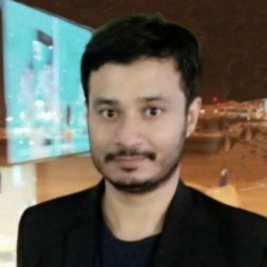

|
Muhammad Toseef
Short Bio: I completed my PhD in Computer Science at
City University of Hong Kong,
supervised by Prof. Ka-Chun Wong.
From December 2023 to June 2024, I was a visiting PhD student in the
Hemberg Lab at Brigham and Women’s Hospital,
Harvard Medical School, under the supervision of
Prof. Martin Hemberg.
Email / CV [PDF] / Google Scholar / GitHub / ResearchGate / LinkedIn
📌 I am currently looking for postdoctoral opportunities.
|

🌓
|
{kind=link}
Research Interests
My research interests span
Transfer Learning, Biomedical Informatics, Computational Biology, and AI for Health.
My recent work focuses on large language models (LLMs) and multimodal models (MMLMs)
for genomics and clinical data.
|
Selected Publications(full list) |

|
Reducing healthcare disparities using multiple multiethnic data distributions with fine-tuning of transfer learning
Muhammad Toseef, Xiangtao Li, Ka-Chun Wong Briefings in Bioinformatics, 2022 |

|
Construction of Immune Infiltration-Related LncRNA Signatures Based on Machine Learning for the Prognosis in Colon Cancer
Zhe Liu, Olutomilayo Olayemi Petinrin, Muhammad Toseef, Nanjun Chen, Ka-Chun Wong Biochemical Genetics, 2023 |

|
Machine learning in metastatic cancer research: Potentials, possibilities, and prospects
Olutomilayo Olayemi Petinrin, Faisal Saeed, Muhammad Toseef, Zhe Liu, Ibukun Omotayo Muyide, Qiuzhen Lin, Xiangtao Li, Ka-Chun Wong Computational and Structural Biotechnology Journal, 2023 |
|
|
Deep transfer learning for clinical decision-making based on high-throughput data: comprehensive survey with benchmark results
Muhammad Toseef, Olutomilayo Olayemi Petinrin, Fuzhou Wang, Saifur Rahaman, Zhe Liu, Xiangtao Li, Ka-Chun Wong Briefings in Bioinformatics, 2023 |

|
GILoop: Robust chromatin loop calling across multiple sequencing depths on Hi-C data
Fuzhou Wang, Tingxiao Gao, Jiecong Lin, Zetian Zheng, Lei Huang, Muhammad Toseef, Xiangtao Li, Ka-Chun Wong iScience, 2022 |

|
Synthetic data with neural machine translation for automatic correction in Arabic grammar
Aiman Solyman, Wang Zhenyu, Tao Qian, Arafat Abdulgader Mohammed Elhag, Muhammad Toseef, Zeinab Aleibeid Egyptian Informatics Journal, 2021 |
Teaching Experience
City University of Hong Kong – Teaching Assistant
Academic Services
Conference Reviewer: ICONIP 2024 & 2025, IEEE Big Data 2022, ISMSI 2020 & 2021
Journal Reviewer: Computational and Structural Biotechnology Journal, Heliyon, BioData Mining, PeerJ Computer Science